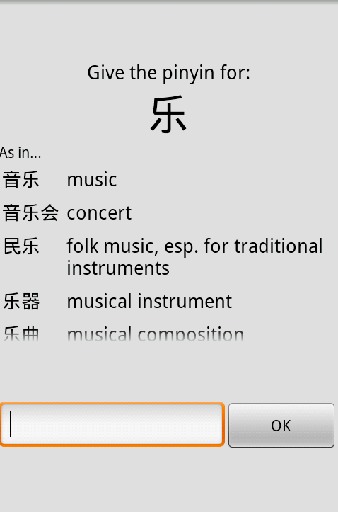

In this test, you are given one character and you need to give the pinyin for that character.
When it is not expanded already, you may tap on "As in..." to show some words containing that character.
The solution can be entered as a pinyin with the accent like "lè" or with the tone as a digit like "le4"
